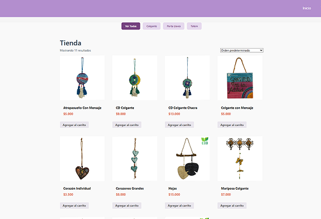
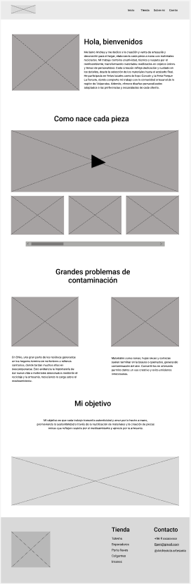
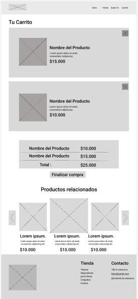
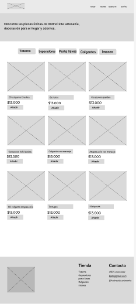
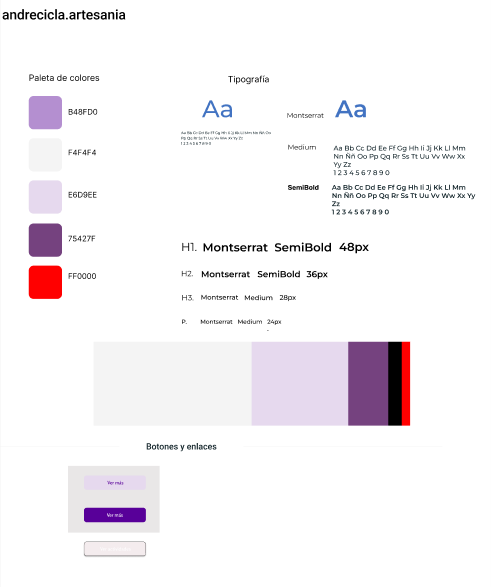

AndreCicla E-Commerce
Desarrollo integral de una plataforma de comercio electrónico. El enfoque principal fue construir un flujo de compra intuitivo que a la vez transmitiera la misión de dar una nueva vida a los objetos a través del reciclaje. El proyecto fue desarrollado en conjunto con compañeros de la institución, donde se distribuyeron las tareas y partes del proceso a realizar durante el desarrollo. En mi caso concretamente, principalmente trabaje en la parte de codificación del sitio para su correcto funcionamiento, así como también como aportar ideas en la parte de diseño.
El Cliente
Emprendedora dedicada a la creación de artesanías y decoraciones. La necesidad principal era establecer un canal de ventas digital propio que permitiera gestionar su inventario y destacar la personalidad de la marca, muy enfocada en la reutilización de materiales.

Análisis del Problema
Se evaluaron las limitaciones tecnológicas previas. Se requería una infraestructura CMS que soportara pasarelas de pago y gestión de envíos, manteniendo una interfaz de administración lo suficientemente sencilla para que el cliente pudiera gestionar todo sin depender de código.
Principales Hallazgos
- El catálogo requería categorización dinámica basada en el tipo de material reciclado.
- La velocidad de carga de las imágenes de producto afectaba la retención en dispositivos móviles.
- Era estrictamente necesario implementar estándares de accesibilidad universal para asegurar que el proceso de checkout fuera inclusivo y programáticamente claro.
Wireframes y Estructura
Desarrollo de bocetos estructurales enfocados en la experiencia de usuario (UX).



Identidad y UI
Se consolidó una guía de estilos en base a ciertos requerimientos del cliente, quien enfatizaba en el uso de colores de tonalidad pastel.
